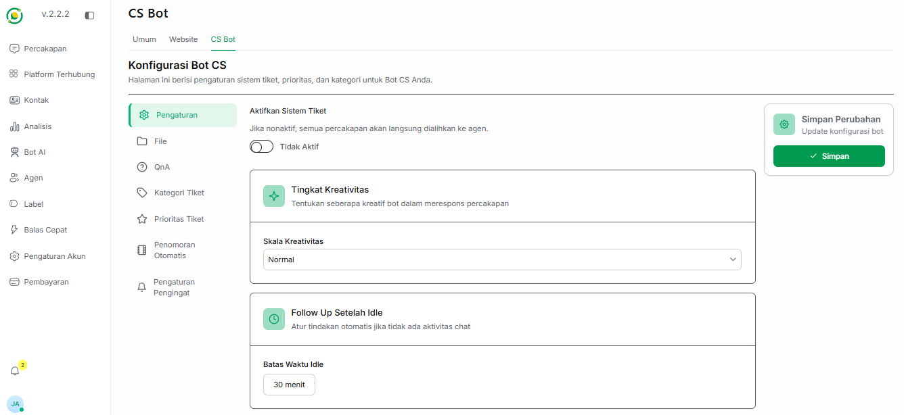
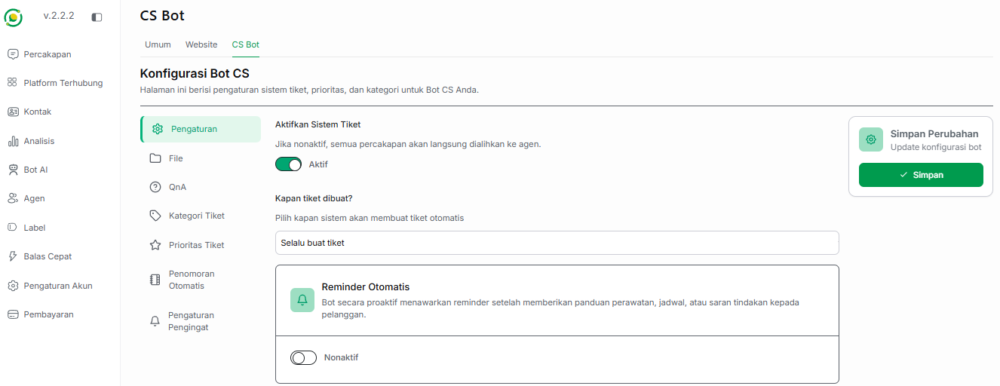
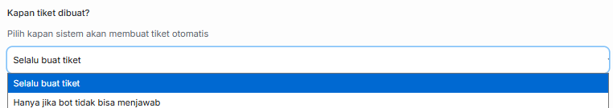
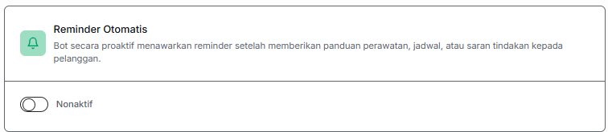
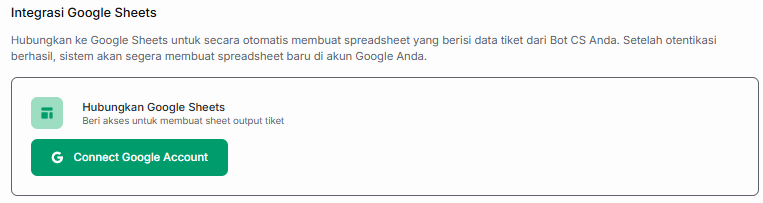
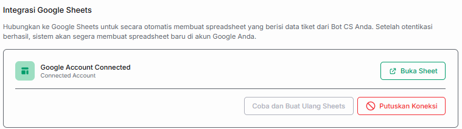
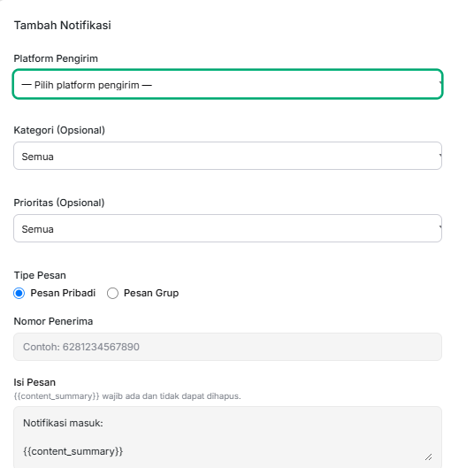
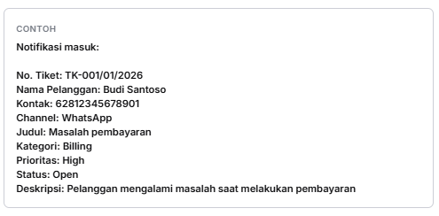
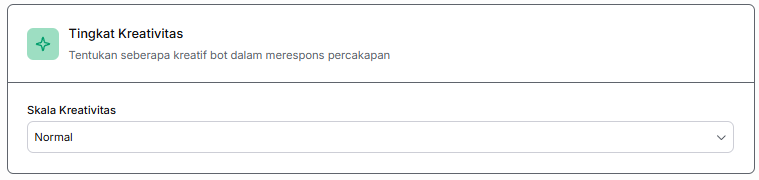
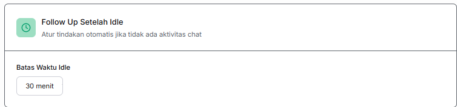

⚙️ Pengaturan CS Bot & Sistem Tiket
Menu Pengaturan pada CS Bot memungkinkan Anda untuk mengonfigurasi bagaimana cara bot AI mengelola keluhan pelanggan, mengatur alur pembuatan tiket bantuan, hingga menentukan tindakan tindak secara lanjut otomatis.
🎫 1. Aktivasi & Konfigurasi Sistem Tiket
Fitur ini merupakan pusat kendali utama untuk mengaktifkan atau menonaktifkan manajemen antrean keluhan terstruktur di dalam CS Bot Anda.
🔴 Kondisi Saat Sistem Tiket Dimatikan
Apabila Aktifkan Sistem Tiket berada dalam posisi Tidak Aktif, maka seluruh obrolan keluhan pelanggan akan dilemparkan langsung kepada agen manusia tanpa adanya pembuatan nomor antrean kasus. Tampilan fitur pendukung lainnya akan disembunyikan.

🟢 Kondisi Saat Sistem Tiket Dinyalakan
Apabila sakelar Aktifkan Sistem Tiket digeser ke posisi Aktif (berwarna hijau), sistem otomatis akan memunculkan beberapa opsi konfigurasi tambahan di bawahnya:

a. Kapan Tiket Dibuat
Pilihan ini menentukan momentum atau pemicu utama kapan nomor referensi tiket pelacakan kasus harus mulai diproduksi oleh bot. Menu dropdown ini menyediakan 2 pilihan mekanis:
- Selalu buat tiket: Begitu pelanggan mengirimkan pesan sapaan atau aduan pertama, bot langsung otomatis mengunci sesi tersebut ke dalam nomor referensi kasus baru.
- Hanya jika bot tidak bisa menjawab: Bot akan bekerja keras menjawab keluhan menggunakan basis pengetahuan QnA terlebih dahulu. Nomor tiket pelacakan baru akan diproduksi jika pelanggan menemui jalan buntu dan butuh bantuan agen manusia.

b. Reminder Otomatis
Fitur ini berfungsi agar bot bergerak secara proaktif guna menawarkan pesan pengingat (reminder) setelah memberikan panduan perawatan, jadwal janji temu, atau saran tindakan solusi tertentu kepada pelanggan.
- Aktif: Bot otomatis mengirimkan teks pengingat lanjutan agar pelanggan segera mengecek status penanganan masalah mereka.
- Nonaktif: Bot berhenti mengirimkan tawaran pengingat setelah instruksi teks selesai diberikan.

c. Integrasi Google Sheets
Opsi ini berfungsi untuk menghubungkan data tiket dari Bot CS Anda ke spreadsheet Google secara otomatis untuk mempermudah pengarsipan data. Proses integrasinya terbagi menjadi dua tahap tampilan:
- Tampilan Sebelum Terhubung (Belum Aktif): Pada tahap awal, sistem akan meminta otentikasi. Anda perlu mengklik tombol hijau Connect Google Account untuk memberikan izin akses pembuatan sheet output tiket.

- Tampilan Setelah Terhubung (Sudah Aktif):
Setelah proses otentikasi akun Google berhasil, tampilan panel akan berubah menjadi Google Account Connected. Sistem akan segera membuat spreadsheet baru di akun Google Anda secara otomatis. Pada tampilan ini, Anda memiliki beberapa tombol aksi:
- Buka Sheet: Untuk langsung membuka dokumen spreadsheet hasil output tiket.
- Coba dan Buat Ulang Sheets: Untuk membuat ulang lembar kerja baru jika terjadi kendala.
- Putuskan Koneksi: Tombol merah untuk memutuskan integrasi akun Google yang sedang aktif.

d. Pengaturan Notifikasi Tim Internal
Bagian ini digunakan apabila Anda ingin memantau masuknya tiket aduan atau keluhan baru dari pelanggan secara cepat. Setiap kali ada tiket baru dengan kriteria tertentu yang terpenuhi, sistem akan memicu alarm pemberitahuan otomatis ke tim internal Anda agar penanganan masalah (troubleshooting) dapat dilakukan secepat mungkin.
Untuk mengaktifkan fitur ini, setelah mengklik tombol + Tambah Notifikasi, Anda perlu melengkapi komponen pengaturan berikut:

- Platform Pengirim: Pilih platform atau saluran komunikasi yang akan digunakan sistem untuk mengirimkan pesan notifikasi darurat ke tim Anda.
- Kategori (Opsional): Pilih jenis kategori masalah tiket apa saja (misalnya: Masalah Pembayaran, Bug Sistem) yang ingin Anda pantau untuk dikirimkan notifikasinya. Anda dapat memilih opsi Semua untuk memantau seluruh kategori.
- Klasifikasi / Prioritas (Opsional): Pilih tingkat urgensi tiket tertentu yang ingin Anda prioritaskan (misalnya hanya memicu notifikasi untuk tiket tingkat High). Anda dapat memilih opsi Semua jika ingin memantau setiap tingkatan prioritas.
- Tipe Pesan: Tentukan arah tujuan pengiriman alarm notifikasi. Terdapat 2 pilihan mekanisme:
- Pribadi: Jika memilih tipe ini, Anda wajib memasukkan nomor pribadi tujuan. Informasi data tiket masuk nantinya hanya akan dikirimkan secara privat ke nomor telepon staf tersebut.
- Grup: Jika memilih tipe ini, informasi rangkuman tiket baru akan dikirimkan langsung ke dalam grup obrolan bersama, sehingga seluruh anggota tim support di dalam grup tersebut dapat mengetahuinya secara transparan.
- Isi Pesan: Tulis template teks draf pesan notifikasi otomatis yang ingin Anda terima di saluran komunikasi tim internal.
Berikut adalah contoh format tampilan ringkasan notifikasi yang akan diterima oleh ponsel tim internal Anda ketika ada tiket aduan baru yang berhasil dicatat oleh AI:

✨ 2. Tingkat Kreativitas AI (Temperature)
Pengaturan skala kreativitas mengontrol seberapa kaku, patuh pada dokumen SOP, atau seberapa luwes gaya perangkai bahasa AI saat memberikan solusi kepada konsumen Anda.

Anda dapat menentukan tingkatan respons melalui pilihan dropdown berikut:
- Rendah Sekali / Rendah: Bot akan merespons keluhan dengan kalimat yang sangat formal, kaku, saklek, dan konsisten berdasarkan teks dokumen baku.
- Normal: (Rekomendasi) Gaya bahasa penanganan keluhan yang seimbang; ramah, solutif, natural, namun tetap menjaga profesionalisme layanan.
- Tinggi / Tinggi Sekali: Bot akan menggunakan kosakata yang jauh lebih ekspresif, variatif, dan luwes untuk meredam kemarahan konsumen.
⏱️ 3. Follow Up Setelah Idle
Fitur ini berfungsi untuk mengatasi masalah operasional di mana pelanggan tiba-tiba berhenti membalas percakapan (idle) di tengah-tengah proses penyelesaian masalah atau troubleshooting teknis.

- Fungsi: Jika pelanggan mendadak tidak merespons dalam rentang waktu tertentu, bot akan otomatis mengirimkan pesan sapaan hangat/konfirmasi lanjutan untuk memancing balik respons mereka agar tiket kasus tidak hangus atau kedaluwarsa.
- Batas Waktu Idle: Anda dapat memilih durasi waktu tunggu bot yang sesuai dengan SOP bisnis Anda melalui pilihan menu:
5 menit10 menit30 menit1 jam2 jam24 jam
💾 Menyimpan Perubahan
Setiap kali Anda selesai memodifikasi aturan sakelar tiket, mengubah limit jeda tunggu (idle), atau menggeser skala kreativitas, jangan lupa untuk menekan tombol hijau Simpan pada panel kanan Simpan Perubahan agar semua rumus pengaturan CS terbaru Anda langsung diunggah ke memori otak bot.